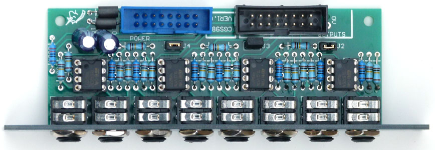
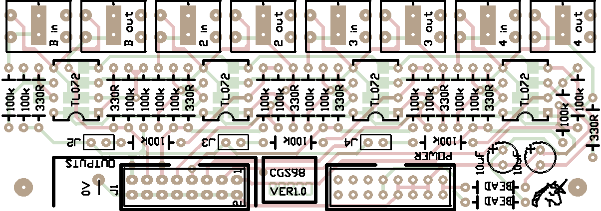
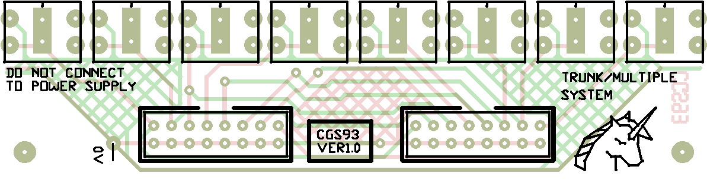

|

The Bus Driver is a buffered bus for distributing CVs, or even audio to several modules, or even to several cabinets. In the basic configuration, it has four buffers, each of which (through the use of a CGS98 expansion) also offers inversions of these voltages. In the advanced configuration, input 1 is added to the signals of inputs 2, 3 and 4. As such, a root note can be fed into input 1, while sequencers are fed into the other inputs. Changing the voltage on input 1 would then change the root of all three of the sequences, allowing them to follow the root pitch. This was developed due to the drastic shortage of CV inputs on many Eurorack VCO modules. An optional expansion board allows the buffered outputs to be bussed to other locations in the synthesizer. Also on the expansion board are inverted versions of the incoming signals. The non-inverted outputs on the expansion boards are hard-wired to the outputs on the driver board. The inverted outputs 2, 3 and 4 are not offset by the voltage on input 1, irrespecitive of whether the internal links are installed or not. A little on how it works:


Pad identification:
ConstructionBefore you start assembly, check the board for etching faults. Look for any shorts between tracks, or open circuits due to over etching. Take this opportunity to sand the edges of the board if needed, removing any splinters or rough edges. Jack centers are at 1/2" spacing. The board will fit behind Euro and Frac rack panels.
The light colored surface mount parts are 39pF to 47pF. The dark ones are 100nF.
Surface mount capacitors of 1206 or 805 are used on the rear of the PCB. See above. For best results, hand match the resistors. This may necesitate you buying 100 resistors to sort through. Use IC sockets. Once the unit is assembled, power it, with no inputs connected. Check the voltages at the outputs. Ideally, they will all be at zero. If an output is too far from zero, replace the corresponding chip. (0.083V = a semitone, so 0.005 V would be noticable.) That chip can be used in other projects where such an offset is not a problem. If using a boxed header for the power connection, it will need a little filing so it clears the leads of the ferrite beads. Between each set of pads for the mounting of the Cliff jacks, there is a large pad with two holes. This is so banana jacks can easily be mounted on the side of the board without the overlay. A short length of wire can be folded, looped through the banana jack's hole, then through the holes on the PCB, where it can be twisted to hold the jack in place while you solder it. The twist can then be trimmed back. As banana jacks have no earth connection, one has been provided on the PCB itself. Hook this to the nearest convenient power supply 0V/GND point on your panel. This will ensure the shield wires in the ribbon cable(s) are earthed. If using banana jacks with the Euro panel, the jacks need to be mounted on the other side. A small portion needs to be trimmed from the tab of the jack to prevent it shorting against other tracks. See the photos on the CGS93 page. The three jumpers (J2,3,4) are to allow the output of the first driver to be disconnected from the other three drivers. You can use wire links, or removable jumpers. The panel has two sides, one for use as the input panel, or as a stand-alone module, the other for the bus outputs, if used.
Notes:
Parts list This is a guide only. Parts needed will vary with individual constructor's needs. Check the PCBs for Sale page to see if I have any in stock.
Can't find the parts? See the parts FAQ to see if I've already answered the question. Also see the CGS Synth discussion group.
Article, art & design copyright 2013 by Ken Stone
| |||||||||||||||||||||||||||||||||||||||||||||||||||||